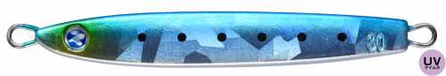
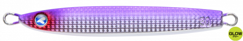
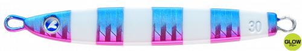

フォルテン
（FALLTEN）
フォルテンはBlueBlue（ブルーブルー）のメタルジグです。
「スカッと飛ぶ！ストンッと落ちる！」がコンセプトのテールヘビー型ジグ。高い遠投性能で広く探れ、素早いフォールでボトムタッチも分かりやすいので、ショアからの釣りで上から下まで丁寧に探れます。重さがひと目で分かる刻印入りにリニューアルされています。

画像出典:BlueBlue公式HP
スペック
- メーカー
- BlueBlue（ブルーブルー）
- タイプ
- メタルジグ（テールヘビー）
- ウェイト
- 20g／30g／40g
- フック
- トレブルフック＆ティンセル付きアシストフック標準装備
- ターゲット
- 青物・シーバス・ヒラメ
- 価格
- 880円〜1,050円（税別）
▼今すぐチェック

フォルテンの特徴
スカッと飛んでストンッと落ちる、テールヘビーの大本命ジグ
-
高い遠投性能
テールヘビー設計でよく飛び、広い範囲を探れます。遠くに出たナブラにもスピーディーに届けられます。
-
素早いフォールでボトムが分かる
素早いフォールで魚のリアクションバイトを誘うだけでなく、ボトムタッチもはっきり分かります。ショアからでも上から下まで丁寧に探れます。
-
重さがひと目で分かる刻印
リニューアルでg数を本体に刻印。ルアーボックスからすぐに目当ての重さを見つけられ、刻印なので消えません。
フォルテンの使い方
基本はボトムまで沈めてからのジャーク＆フォール。素早く落ちるので、着底を確認しながらテンポよく誘えます。
フォーリングアクションで食わせる「スピニングスロー」もおすすめ。巻き上げとフォールを繰り返しながら、レンジを刻んで魚のいる層を探しましょう。トレブルフックを外すと、さらに飛距離が伸びます。
フォルテンの得意な状況
ライトショアジギングでの青物狙いを中心に、サーフのヒラメ、シーバスタックルでの回遊魚狙いなど。遠くのナブラを狙いたいときや、潮が速くてほかのジグが底を取りにくいときに向いています。
ワンポイント
スライドとスローフォールで誘いたいときは、同じBlueBlueのシーライドとローテーションするのがおすすめです。フォルテンで手早く探り、反応が渋いときにシーライドに持ち替えましょう。
フォルテンのウェイトの使い分け
| モデル | 全長／自重 | 得意な場面 |
|---|---|---|
| 20g | 20g | 港湾や浅い場所、シーバスタックルでのライトショアジギングに |
| 30g | 30g | サーフや堤防で使いやすい基準ウェイト |
| 40g | 40g | 遠投が必要な場所や、潮が速く深い場所に |
BlueBlueにはフォルテンミディアムや、タングステン製のフォルテンTGもあります。飛距離とシルエットの大きさで選びましょう。
人気カラー
公式ラインナップから4色を紹介します（カラー名は公式の表記のまま）。

#03 ケイムラマイワシケイムラのマイワシカラー。澄み潮や日中にナチュラルに見せたいときに。
赤と金のアピールカラー。濁りや朝マズメに。

#06 カタクチグローカタクチイワシにグローをプラス。マズメの暗い時間帯に。

#07 ブルピンゼブラブルーピンクにゼブラ柄を入れたカラー。定番のブルピンに変化をつけたいときに。
画像出典:BlueBlue公式HP
フォルテンに似ているルアー
-
 シーライド
ブルーブルー
詳細はこちら＞
シーライド
ブルーブルー
詳細はこちら＞
同じBlueBlueのメタルジグ。順付け・逆付けでスライドやただ巻きの誘いを使い分けたいときに。
-
 ジグパラショート
メジャークラフト
詳細はこちら＞
ジグパラショート
メジャークラフト
詳細はこちら＞
20g〜60gまでそろうセンターバランスのメタルジグ。フォールでゆっくり見せたいときに。
-
 ジャックアイマキマキ
ハヤブサ
詳細はこちら＞
ジャックアイマキマキ
ハヤブサ
詳細はこちら＞
ただ巻き専用のブレードジグ。しゃくらずに巻くだけで誘いたいときに。